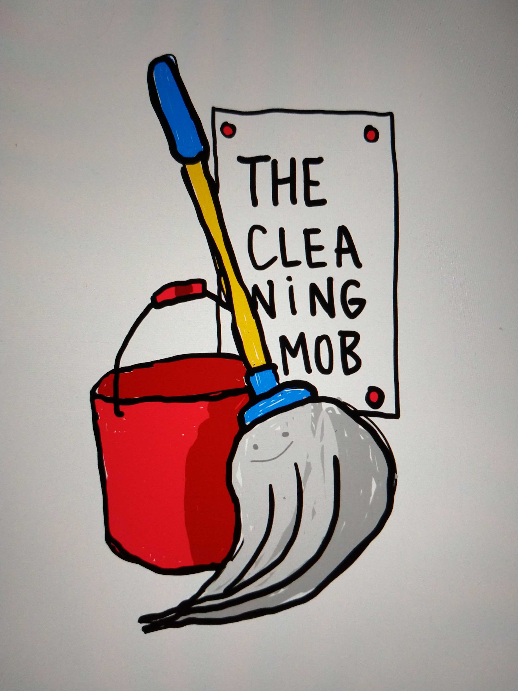

Every wednesday at 13:00h Amsterdam time on Google Meet
Iedere woensdag om 13 uur (Amsterdamse tijd) op Google Meet
Come find us on the Code for NL Slack channel #cleaningmob
Kom naar de Code for NL Slack kanaal #cleaningmob
It's fun to code. It's fun to learn from peers. And we all love open source projects. What if we combine maintenance of open source projects with peer learning?
Het is leuk om te programmeren. Het is leuk om van vakgenoten te leren. En we houden allemaal van open source projecten. Wat als we het onderhoud van open source projecten nu eens combineren met van elkaar leren.
The Cleaning Mob does Weekly mob programming kata's on open source code bases. We discuss a piece of code. We discuss the ways this code could be better, for example using principles from Clean Code, Design Patterns and Refactoring. We then make one or two refactorings, and submit a pull request.
The Cleaning Mob doet wekelijks oefeningen met elkaar op open source code bases. We bespreken een stuk code. We bespreken de manieren om daar iets aan te verbeteren, bijvoorbeeld Refactoring Patterns toepassen, of Clean Code principes. We doen daarna wat aanpassingen en maken dan een pull request.
We bring our expertise. We take home our learnings. And we improve the code bases we love as a collateral benefit.
Ieder neemt zijn eigen kennis en ervaring mee. En we gaan naar huis met wat we van elkaar geleerd hebben. En als we daarbij code bases hebben verbeterd, dan is dat mooi meegenomen.
There are many tricks for iterative code improvements. Most of us know only few. But together we know them all. So let's learn!
Er zijn veel manieren om code stapsgewijs te verbeteren. We kennen er allemaal wel een paar. Samen kennen we ze allemaal. Dus laten we van elkaar leren!
Refactoring patterns and more at https://sourcemaking.com/
Please feel free to commit pull requests for this site at: https://github.com/everybitnl/thecleaningmob.nl